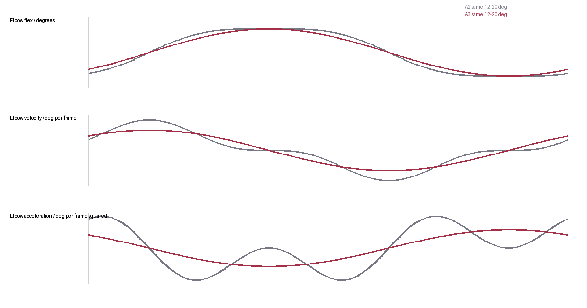

Inspect the shape and whole cycle
Shaded comparisons show A2 on the top row and A3 below. These views reveal surface shape hidden by flat colors; isolated arms omit the surrounding character only for inspection.
Mozu · A2 refinement · 3 October 2026
A2 is the preferred direction. A3 keeps its small elbow bend and shoulder swing, with a gentler reversal and a broader, continuous bend through the arm.
Previous arm directions · Original running references · All reviews
Relaxed silhouette · small elbow bend
Same rhythm · more distributed bending
Loading…
Both sides show the same instant. 40 native poses per cycle at 60 fps; no generated in-between frames.
The elbow still moves through 12–20° at the same phase. A simpler response removes a small extra acceleration ripple during the forward and backward reversal.
The bend spreads over 30% of arm length, up from 24%. The shoulder attachment and arm scale stay fixed. Timing softness and bend softness are separate editable controls.
Body, head, leg and tail motion are identical. This is a focused arm refinement; the full run is still a review candidate.
Shaded comparisons show A2 on the top row and A3 below. These views reveal surface shape hidden by flat colors; isolated arms omit the surrounding character only for inspection.
| Study | Min forearm + fist / rest | Side travel / A2 | Body allowance excess |
|---|---|---|---|
| A2 | 65.0% | 100.00% | +0.000936 |
| A3 | 65.2% | 100.00% | -0.002574 |
Negative body allowance excess passes the existing clearance limit. Visibility is a diagnostic; an arm tip can be hidden by the arm itself.
The original checks remain unchanged. E9 paw–tail overlap and inherited pose/visibility checks remain open, including V1's forward-hand-over-belly requirement. New arm controls are tested in this relaxed 12–20° domain. Main-agent review only; no independent sign-off or release adoption.
Measurements · Native checks · View checks
